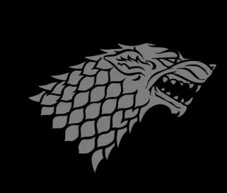
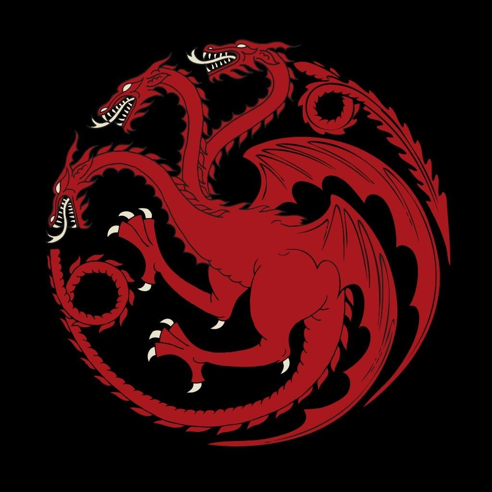
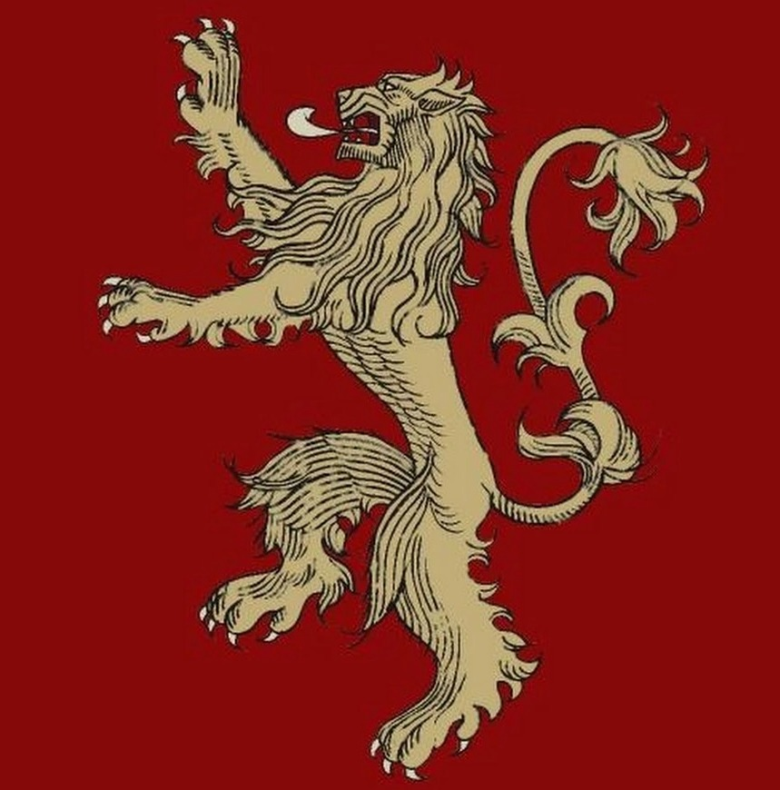
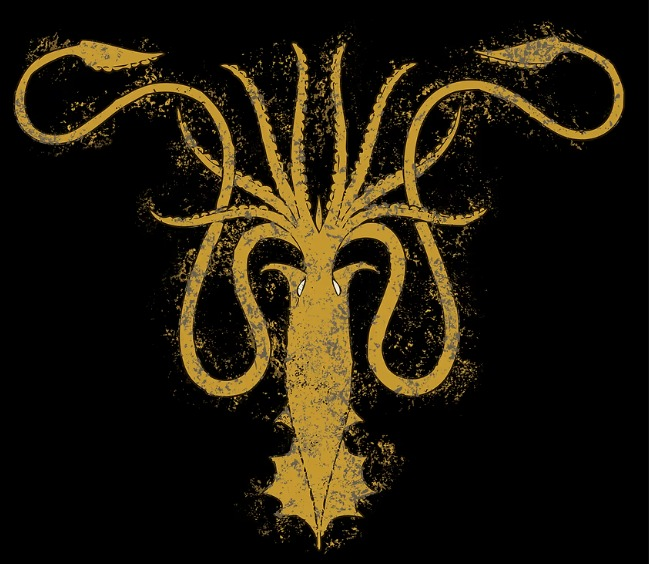
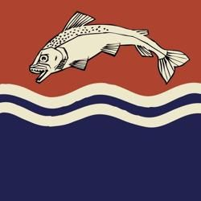
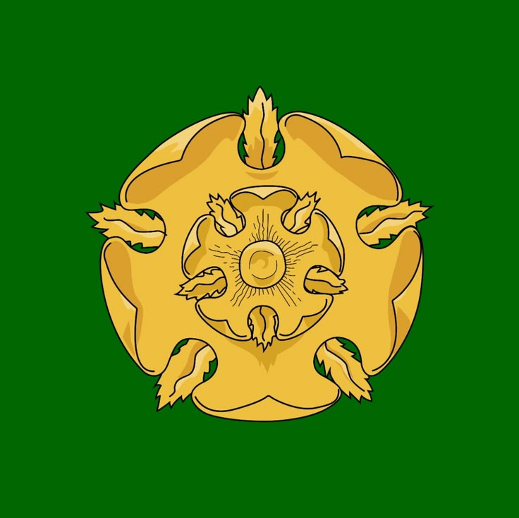
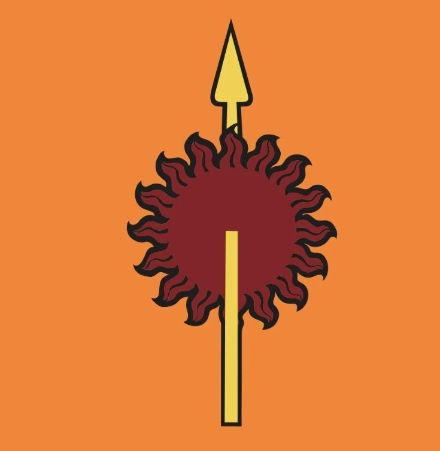

As Crônicas de Gelo e Fogo
A jornada começa aqui, nos arquivos mais profundos da Cidadela. Mais do que meras fronteiras traçadas em pergaminho, este mapa é o registro vivo de milênios de história, traições e conquistas. Desbrave os Sete Reinos e as vastidões Além do Mar Estreito. Descubra os segredos das Grandes Casas, das espadas Valirianas perdidas às linhagens esquecidas. Das cinzas da Perdição de Valíria às Muralhas de Winterfell, o conhecimento é o verdadeiro poder. Explore. Descubra. Lembre-se.
Adentrar os Registros
Stark
"O Inverno Está Chegando"

Targaryen
"Fogo e Sangue"

Lannister
"Ouça-me Rugir"

Greyjoy
"Nós Não Semeamos"

Tully
"Família, Dever, Honra"

Tyrell
"Crescendo Fortes"

Martell
"Insubmissos, Não Curvados, Não Quebrados"
Os Arquivos da Cidadela
🗺️ Mapa
Navegue pelas terras conhecidas. Da vastidão de Além da Muralha até as misteriosas ruínas de Valíria.
🛡️ Casas
Lobo, Leão, Dragão ou Veado. Conheça as linhagens e as palavras das Grandes Casas.
👑 Personagens
Reis, bastardos e traidores. Descubra a história das figuras que moldaram o mundo.
⚔️ Guerras
Reviva a Dança dos Dragões, a Rebelião de Robert e a Guerra dos Cinco Reis.
📜 História
Estude a Era dos Heróis, a Longa Noite e a Conquista de Aegon Targaryen.
🐉 Bestiário
Examine registros sobre dragões, lobos gigantes e os temíveis Caminhantes Brancos.
🔥 Religiões
Os Deuses Antigos, a Fé dos Sete e o Senhor da Luz. Conheça as crenças do reino.
🗡️ Artefatos
Lâminas de Aço Valiriano, chifres de controle e coroas perdidas dos antigos reis.
Uma mente necessita de livros da mesma forma que uma espada necessita de uma pedra de amolar, se quiser manter o seu corte.— Tyrion Lannister
Os Sussurros de Varys
"Toque no mestre dos susurros e meus passarinhos lhe contarão os maiores segredos e fatos esquecidos dos Sete Reinos..."
Crônicas em Destaque

Eventos Históricos
A Longa Noite
Quando o inverno se abateu sobre Westeros, uma escuridão ancestral despertou Além da Muralha. O exército dos mortos, liderado pelo temível Rei da Noite e seus Caminhantes Brancos, marchou implacável em direção ao sul. Esta batalha apocalíptica uniu casas inimigas, selvagens e dragões nas muralhas de Winterfell, em uma luta desesperada e sangrenta pela sobrevivência de toda a humanidade contra a noite que nunca termina.
Ler Registro Completo 📖
Eventos Históricos
Batalha dos Bastardos
Os campos gélidos e encharcados de sangue do Norte testemunharam o embate mais brutal e pessoal de sua era. Jon Snow, liderando um exército fragmentado de selvagens e casas leais menores, enfrentou as forças esmagadoras e a crueldade sádica de Ramsay Bolton. Uma carnificina claustrofóbica e desesperada pela honra da Casa Stark, a vingança de Rickon e a retomada definitiva de Winterfell, marcando o retorno dos lobos ao seu lar de direito.
Ler Registro Completo 📖
Personagens
A Mãe de Dragões
Das cinzas e chamas da pira funerária de Khal Drogo, o impossível se tornou realidade. Daenerys Nascida da Tormenta trouxe a magia de volta ao mundo com o nascimento de Drogon, Rhaegal e Viserion. Acompanhe a jornada épica da princesa exilada através do Mar Estreito, desde a quebra de correntes nas cidades escravagistas de Essos até se tornar a rainha conquistadora, pronta para reivindicar o Trono de Ferro com Fogo e Sangue.
Ler Registro Completo 📖